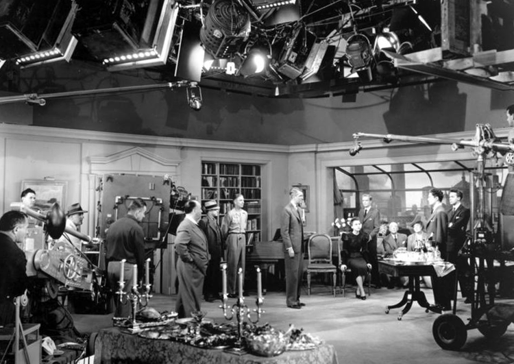

La Soga es famosa por su audaz propuesta técnica. Hitchcock quería que la película se sintiera como una obra de teatro filmada en tiempo real, sin cortes evidentes que interrumpieran la acción. Para lograrlo, rodó con tomas largas de hasta diez minutos (el límite de un rollo de película en esa época) y ocultó los empalmes haciendo que la cámara se acercara a la espalda de un actor o a objetos oscuros.
Aunque no es un verdadero plano secuencia único, el resultado es una ilusión casi perfecta de continuidad que genera una sensación de claustrofobia y voyeurismo. El uso del Technicolor permitió mostrar el paso gradual del atardecer a la noche a través de la gran ventana del departamento, reforzando la idea de que el tiempo transcurre en tiempo real.
Además, la cámara se mueve constantemente con elegantes travelling que siguen a los personajes, creando una atmósfera opresiva. La escenografía fue diseñada para permitir que las paredes y muebles se movieran fuera de cuadro cuando era necesario, permitiendo mayor libertad a la cámara. Este experimento influyó en muchas producciones posteriores que intentaron lograr el efecto de “un solo plano”.

Dato curioso
Durante el rodaje, la cámara dolly (que se movía sobre rieles) atropelló accidentalmente a un camarógrafo y le rompió el pie en una de las tomas largas. A pesar del accidente, el equipo decidió seguir rodando sin detener la toma para no arruinar el complicado plano. El camarógrafo herido tuvo que ser atendido después de que terminara esa secuencia.
Ir al inicio